This chapter introduces the instruments themselves: form factors, detector types, what each is designed for, and the controls and indicators every operator should be able to find with gloves on, in the dark, by feel.
The deepest specification list lives in the operator manual that ships with each unit. This chapter covers what an operator needs to deploy the instrument well, not what an engineer needs to specify it.
The SAM family is a line of handheld radioisotope identifiers built around fast scintillators (CeBr or LaBr) with integrated multichannel analyzers, GPS, on-board storage, and connectivity. The RD-150 is a wearable backpack and vehicle-mountable search system that pairs higher-volume detectors with operator interfaces designed for movement.
| Instrument | Form factor | Primary detector | Mission |
|---|---|---|---|
| SAM 940+ (new) | Handheld RIID | NaI, LaBr, CeBr or CLYC; optional internal neutron | Current-generation handheld with internal detector, one-click reachback, built-in camera, directional radiation detection |
| SAM 940 / 945 | Handheld RIID | NaI(Tl) or LaBr (configuration-dependent) | Identify on scene; veteran fleets |
| SAM 950 | Handheld RIID | CeBr or LaBr (configuration-dependent) | Higher-volume option (3 by 3 in NaI), max sensitivity |
| RD-120 Backpack | Wearable search system | Large-volume scintillator + neutron | Wide-area search, public events, sweeps |
| RD-150 Vehicle | Vehicle-mounted survey | Large-volume scintillator + neutron | Mobile survey at street speeds |
All units in the family share a family resemblance in operator workflow: power-on self-test, calibration check, background acquisition, scan, save, transmit. Once you can run one, you can run any of them.
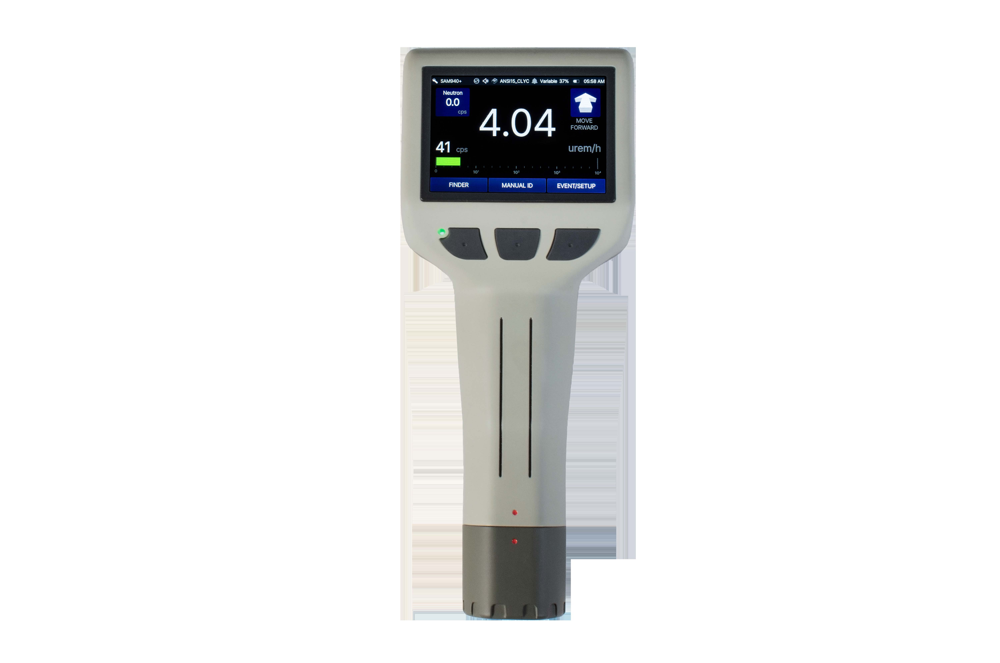
The SAM 940+ is the newest handheld in the SAM family and the unit operators will most often see arriving on a HazMat truck today. It is a re-engineered platform built around real-world feedback from the agencies that have been running SAM family handhelds for years.
What the SAM 940+ adds over earlier handhelds:
On the SAM 940+, the 'send' beat from Chapter 5 collapses into one button press. The unit gathers the spectrum, the photo from the built-in camera, the GPS fix, and any operator notes, and packages them as a single N42.42 transmission to your reachback channel. Operators trained on legacy handhelds report saving 4 to 8 minutes per event once they trust the one-click flow.
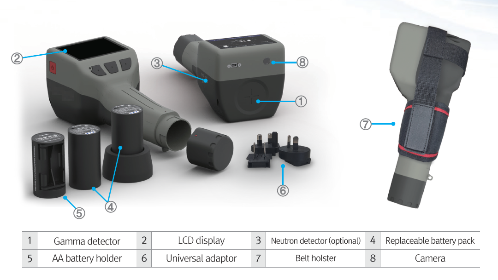
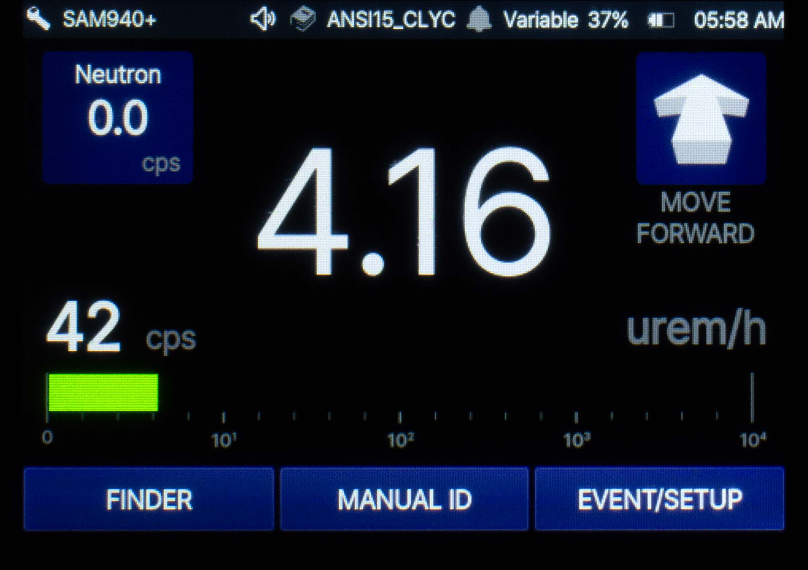
Operator workflow on the SAM 940+ mirrors the rest of the SAM family, power-on self-test, calibration check, background acquisition, scan, save, transmit, but the one-click reachback and built-in camera collapse the "send" step from minutes to seconds. (See Chapter 5 for the full Operations Core.)
Tip: Programs that already operate SAM 940 / 945 fleets can transition operators to the SAM 940+ with minimal re-training. The button vocabulary and screen idiom are familiar; the new affordances are additive.
The SAM 940 series is a long-serving handheld RIID still in active inventory across HazMat, law enforcement, and federal teams. Configurations exist with NaI(Tl) and LaBr crystals, with and without neutron detection, and with various battery and connectivity options.
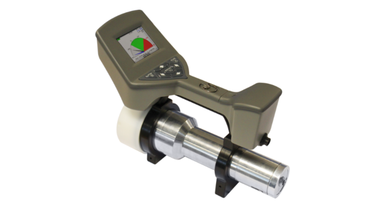
Design intent: Drop-tolerant single-piece handheld; large display readable in daylight; physical buttons usable with gloves; long-running battery; spectrum storage for hundreds of events; export for reachback.
Where you'll see it: Many established programs standardized on the SAM 940 series years ago and are running well-maintained fleets. Operators who learn the SAM 940 can transition to the SAM 950 with little re-training, the workflows match.
Tip: Older SAM 940 firmware may present library entries differently than current SAM 950 firmware. If your team runs both, compare a known check source on each unit and document the displayed text for your SOPs. Naming conventions matter for reachback.
The SAM 950 is a higher-sensitivity handheld in the SAM family, distinguished by its larger internal detector volume in the SAM family. Common configurations use CeBr or LaBr scintillators, with optional neutron detection, integrated GPS, Wi-Fi/cellular for spectrum transmission, and on-board storage measured in thousands of events.
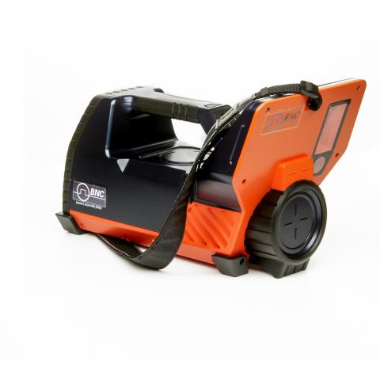
What makes the SAM 950 worth its weight on a HazMat truck:
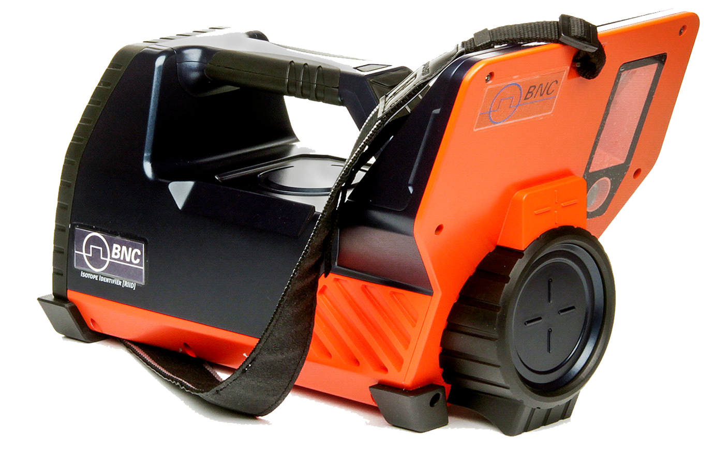
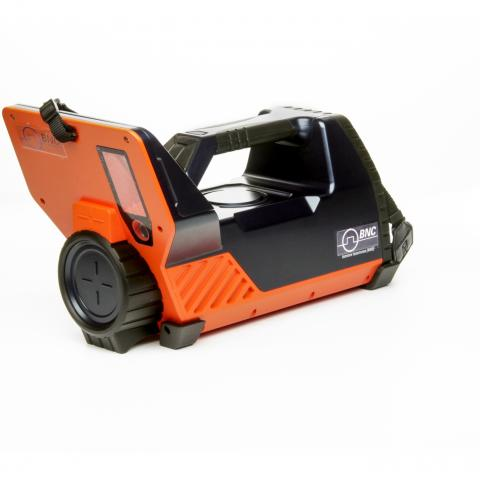
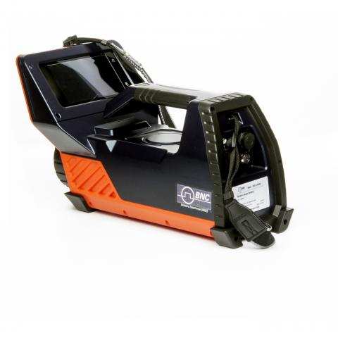
The RD-120 backpack pairs a large-volume detector array (gamma + neutron) with a wearable harness and an operator-facing tablet or phone application. The detector hangs against the operator's back; the tablet rides on the chest or in the hand.
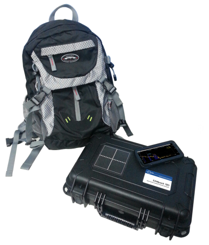
What it is for: - Sweeping public venues, transit stations, parade routes, port yards - Wide-area search for orphan or lost sources - Walking grids in support of state or federal source-recovery operations - Pre-event sweeps before a high-profile public gathering
What an operator should know: - Harness fit matters. The detector should ride high and snug; a sloppy harness leads to operator fatigue and inconsistent geometry. - Walking pace should be steady. The system is calibrated for a normal walking speed; sprinting or stopping erratically degrades the survey. - The tablet shows live count rate, alarm status, GPS track, and identification results. Operators should learn the tablet display before they learn the backpack itself. - GPS-tagged spectra mean every alarm has a location and timestamp. That history is gold during after-action review.
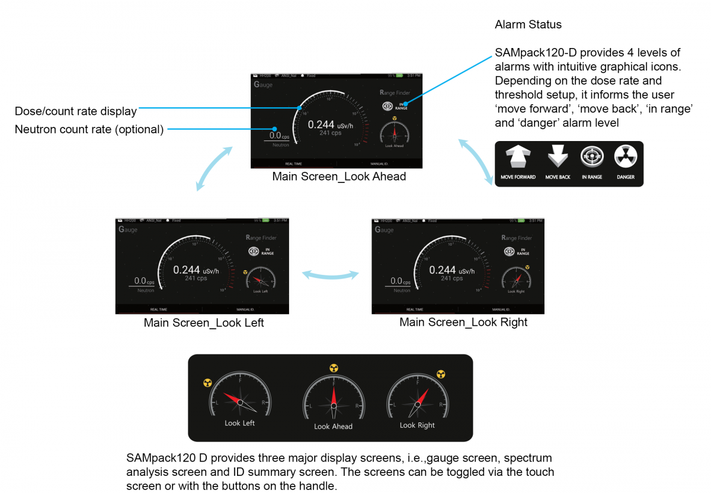
The same detection technology in a vehicle-mountable configuration. The system is mounted in a SUV, van, or pickup; the interface runs on a laptop or tablet at the operator station.
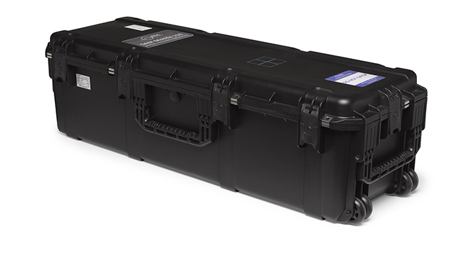
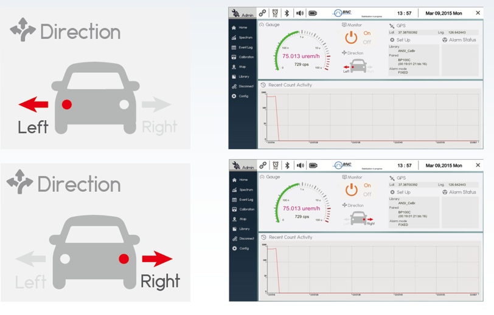
What it is for: - Sweeping a wide area at street speeds (typical survey at 5–30 mph) - Building dose-rate heat maps along a route - Pre-event drive-arounds for protective details - Post-incident plume mapping in support of state radiation control programs
What an operator should know: - Vehicle speed affects sensitivity. A faster sweep covers more ground but reduces the per-square-meter dwell time. - Mounting matters. The detectors should be at a consistent height on the vehicle; height changes affect geometry. - Run a known check source past the vehicle at the start of every shift. If you can't see the check source pop up on the heat map, you have a setup problem.
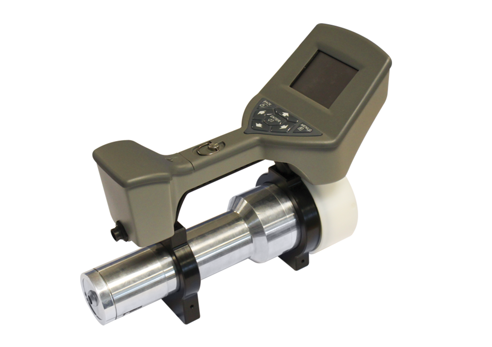
| Detector | Typical use in SAM family / RD-150 | Strength | Operator note |
|---|---|---|---|
| NaI(Tl) | Some legacy SAM 940 configurations | Cheap, rugged, well-understood | Lower resolution; library matches will sometimes be ambiguous |
| LaBr₃(Ce) | SAM 940/945, SAM 950, RD-150 | Excellent resolution; fast | Has natural La-138 background, visible in spectra; ignore the line |
| CeBr₃ | SAM 950 (preferred current build), RD-150 | Excellent resolution; clean (no La-138 line); stable with temperature | Operator-favorite for response work |
| He-3 / Li-glass / B-loaded plastic neutron | RD-150, optional SAM configurations | Distinguishes neutron emitters (Pu, Cf) from gamma sources | Critical for SNM screening |
If your unit has neutron detection, get to know the neutron alarm separately. Neutrons + gammas together is a different kind of alarm than gammas alone. Pu-239 lights both up. Most NORM lights only gammas.
CeBr suits programs where temperature swings and shelf stability matter most, the field-favorite for first-response work. LaBr is appropriate where extreme resolution is the priority and the natural La-138 background line is acceptable. CLYC pairs neutron and gamma in a single crystal, useful for SNM screening missions on the SAM 940+. NaI is the volume-sensitivity play, available with a 3 by 3 inch crystal in the SAM 950 for low-activity threats and shielded sources.
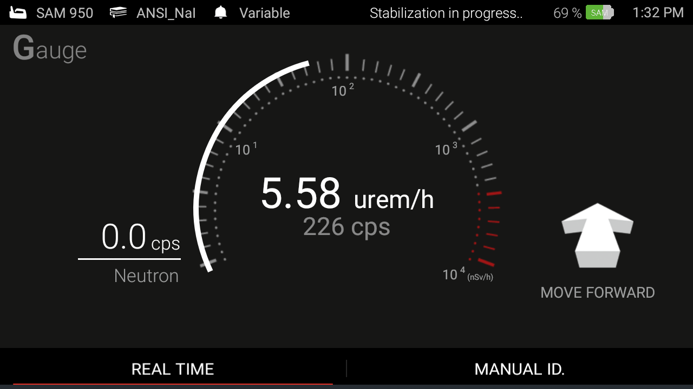
While exact menus and labels vary across firmware and configuration, every SAM family handheld will show you these elements in some form. Find them on your unit before you take it to a scene.
Every program loses calls to dead batteries. Don't let it happen on yours.
A SAM family handheld and an RD-150 are most useful when paired with a small accessory kit:
Build the kit once and check it weekly. A foam-padded hard case for the handheld, two charged spare batteries (rotate quarterly), a calibrated check source per agency licensing, a microfiber cloth, a waterproof field notebook with this handbook's reachback worksheet photocopied inside the cover, a phone or camera, and the agency reachback contact card laminated. The kit lives in a known place on the rig, not a different drawer every shift.
A unit pulled out of a charger and used immediately is a unit that will fail on you. Before you put a SAM family handheld or RD-120 backpack into operational service:
This is the equivalent of a pilot's pre-flight. Don't skip it.
Prefer to answer on screen? Take the interactive quiz → Click an answer for each question, then check your score. Your answers are saved on this device.